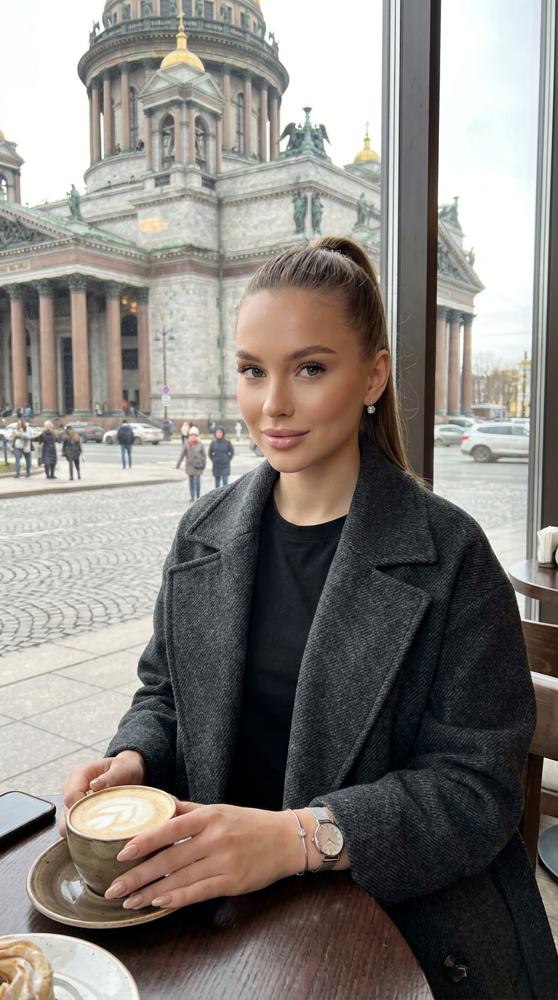
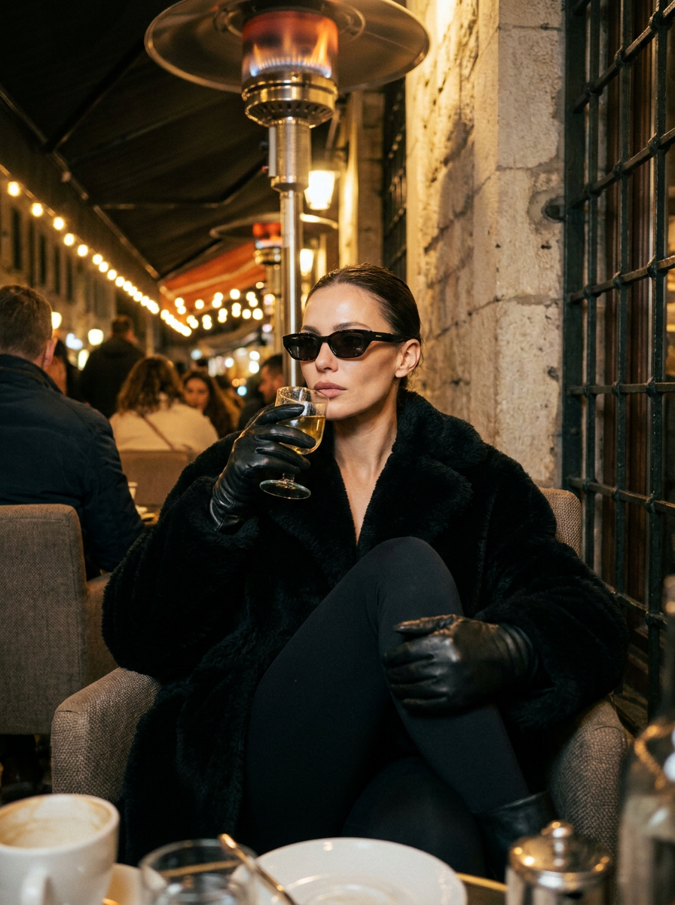
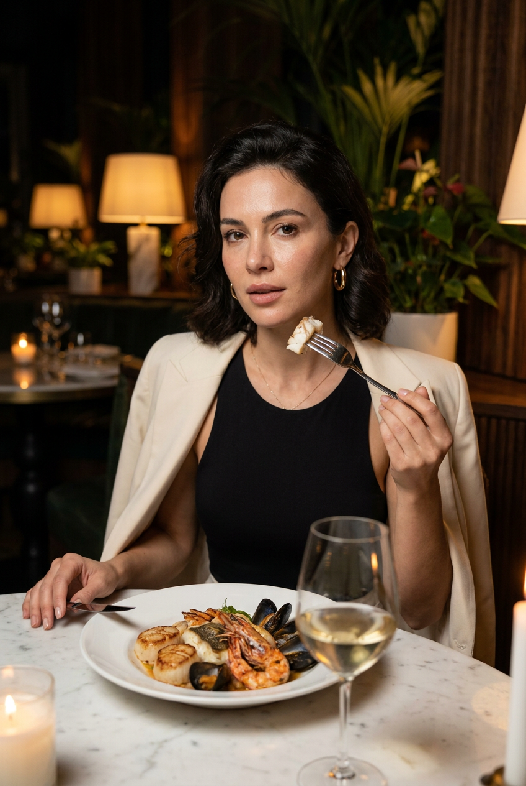
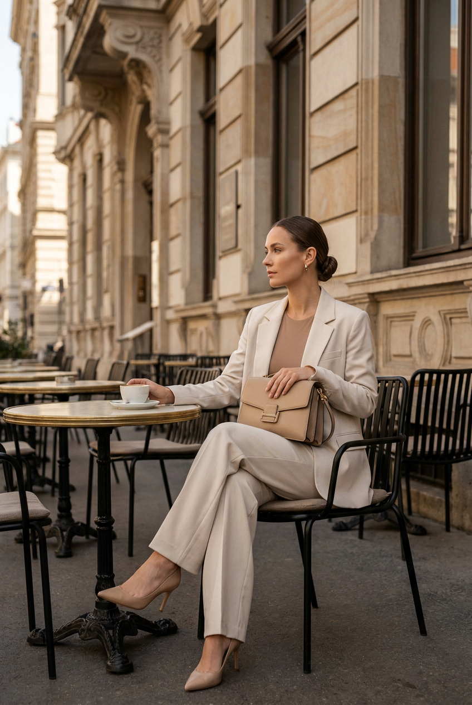
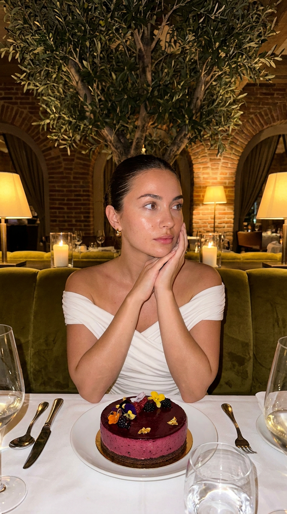
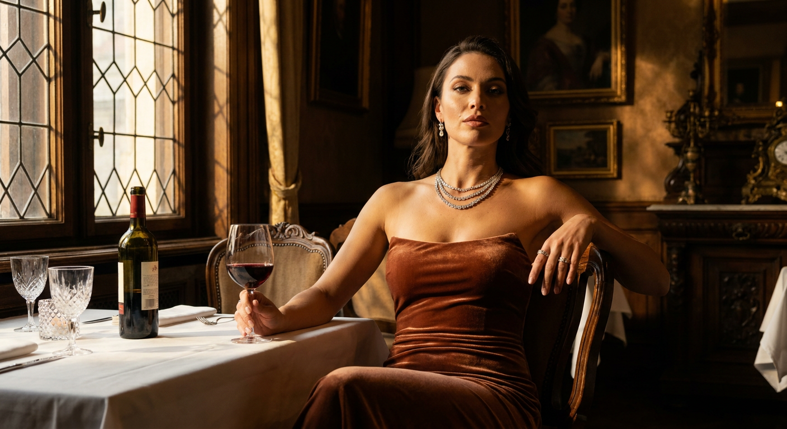
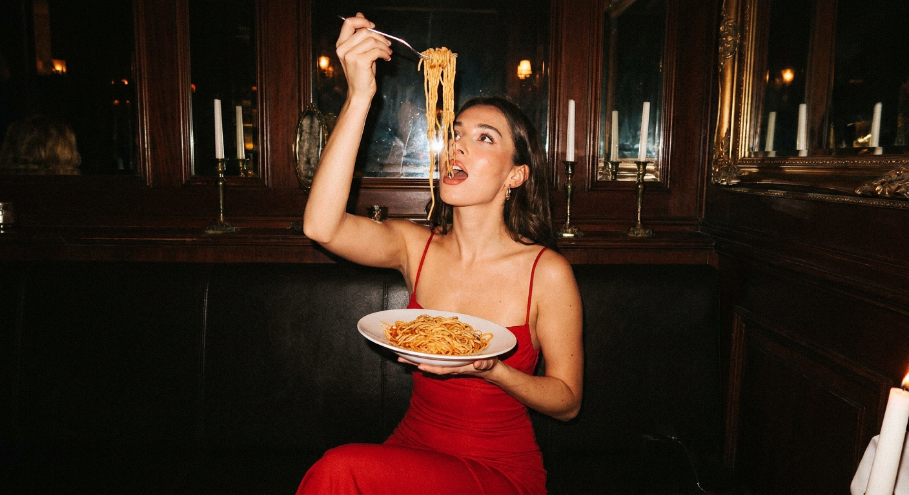
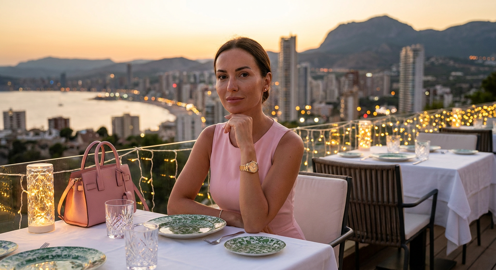
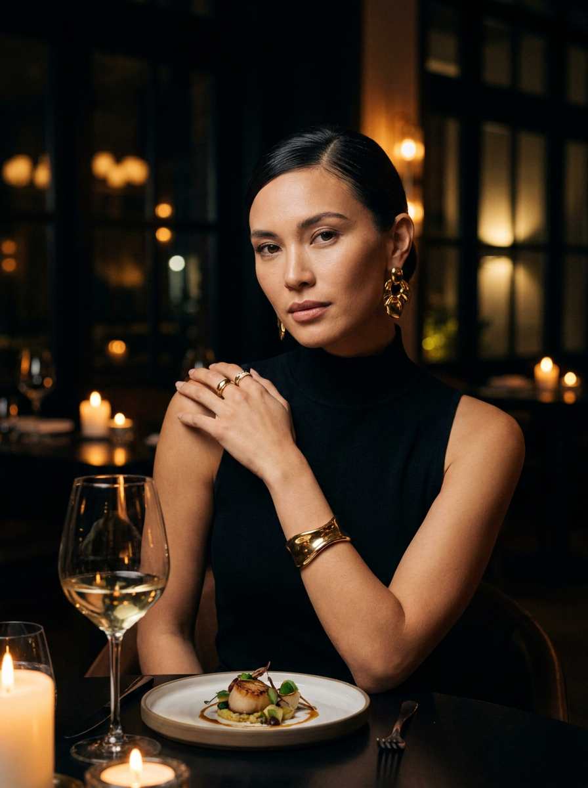
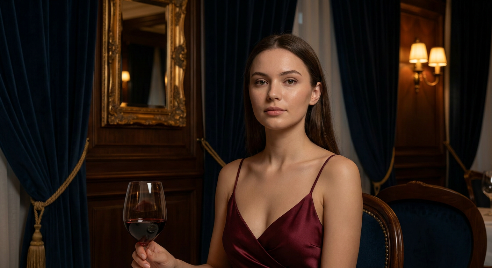

ИИ-фото в ресторане: 10 промптов для нейросети

Красивое фото в ресторане не всегда получается снять в нужный момент: мешают свет, случайные люди в кадре и неподходящий интерьер. Генерация помогает собрать сцену заранее — от наряда и позы до бокала вина и вида за окном.
В подборке — 10 промптов для разных настроений: уютная кофейня в Петербурге, вечерняя веранда, европейское бистро, ресторан old money, винтажный зал и ужин на фоне морского города. Каждый текст можно адаптировать под свой референс.
Как сгенерировать такое фото: пошагово
Нужен снимок анфас при ровном свете, лицо в кадре целиком, без тёмных очков и головных уборов. Разрешение от 1000 пикселей по короткой стороне. Чем чётче исходник, тем точнее модель повторит черты.
Выберите сценарий ниже и нажмите «Копировать» — текст уйдёт в буфер целиком, вместе с командой сохранения внешности. Эта команда стоит первой строкой и отвечает за то, чтобы на выходе было ваше лицо, а не случайное.
Кнопка «Сгенерировать» рядом с каждым промптом открывает модель в новой вкладке. Nano Banana Pro работает с референсом лица — в отличие от моделей, которые генерируют портрет с нуля и узнаваемость теряют.
Промпт — в поле ввода, портрет — через загрузку референса. Порядок значения не имеет, но без референса команда сохранения внешности работать не будет: модели нечего сохранять.
Для сторис и ленты берите 9:16, для превью и обложек — 4:3. Первый результат редко идеален: если поза или свет ушли не туда, поправьте соответствующую часть промпта и запустите заново. Обычно хватает двух-трёх итераций.
10 промптов для генерации
1. Кофейня с видом на Петербург
Строго сохранить внешность по загруженному референсу: черты лица, пропорции, мимику и текстуру кожи без изменений. Гиперреалистичный вертикальный портрет 9:16 с лицом модели по загруженному референсу, без изменения индивидуальных черт. Девушка сидит в уютной кофейне в центре Санкт-Петербурга, рядом большое панорамное окно с видом на Исаакиевский собор, золотой купол, мостовую и прохожих в лёгком движении. На ней тёмно-серое oversize-пальто из мягкой фактурной ткани, под ним чёрный хлопковый топ на тонких бретелях. В образе серебряные пусеты с маленьким камнем и женские часы на тонком браслете. Длинные волосы собраны в гладкий высокий хвост. Нюдовый макияж: естественно сияющая кожа, лёгкий румянец, выразительные ресницы и прозрачный глянец на губах. Бежевый мягкий миндальный маникюр. Она сидит за небольшим столиком из тёмного дерева; на столе чашка капучино и аккуратный десерт. Естественный дневной свет, реалистичные фактуры, атмосферная городская фотография.
2. Вечерняя веранда и бокал

Строго сохранить внешность по загруженному референсу: черты лица, пропорции, мимику и текстуру кожи без изменений. Ультрареалистичная кинематографичная фотография вертикального формата 3:4 на открытой вечерней веранде кафе. Девушка с лицом по референсу сидит глубоко в кресле, корпус чуть повернут влево, одна нога подтянута к груди. На ней объёмная чёрная пушистая куртка из ворсистого материала, гладкие чёрные леггинсы и кожаные перчатки. Обе руки удерживают стеклянный бокал со светлым напитком, почти у самых губ. Тёмные солнцезащитные очки с металлическими дужками добавляют образу закрытость. Волосы гладко убраны назад, без выбившихся прядей. Выражение лица нейтральное и собранное, скулы выделены направленным светом, губы чётко очерчены. Сохранить натуральную текстуру кожи и живые полутона. Мягкое вечернее освещение, лёгкие отражения на стекле, дорогая fashion-съёмка без чрезмерной ретуши.
3. Ужин в ресторане fine dining

Строго сохранить внешность по загруженному референсу: черты лица, пропорции, мимику и текстуру кожи без изменений. Фотореалистичный вертикальный editorial-портрет девушки с лицом по загруженному референсу, с точным сохранением формы глаз, бровей, носа, губ, овала, мимики и пропорций. Съёмка проходит вечером в дорогом ресторане fine dining: тёмный интерьер, тёплый приглушённый свет, зелёные акценты, крупные растения и лампы с мягкими абажурами. Девушка сидит за столом в уверенной элегантной позе, слегка развёрнута к камере. Взгляд направлен прямо или немного в сторону, выражение спокойное, собранное, чуть загадочное, без улыбки. Одной рукой она держит вилку с морепродуктами и подносит её к лицу, вторая свободно лежит на столе. На ней наряд для вечернего ужина, детали ткани и украшений должны выглядеть натурально. Композиция как у дорогого журнального портрета, мягкая глубина резкости, реалистичные тени и фактура кожи.
4. Европейское кафе у фасада

Строго сохранить внешность по загруженному референсу: черты лица, пропорции, мимику и текстуру кожи без изменений. Премиальная фотореалистичная fashion-фотография в вертикальном формате. Девушка с лицом по референсу сидит в европейском уличном кафе на фоне исторического здания: светлый камень, лепнина, высокие окна и декоративные детали старого города. Локация напоминает элегантный дворик при отеле, ресторане или кофейне. Она расположена на чёрном плетёном металлическом стуле у небольшого круглого столика в классическом стиле бистро. Корпус слегка повёрнут к камере, ноги изящно скрещены: одна вытянута вперёд, вторая согнута; на ногах туфли на тонком каблуке. Одна рука мягко лежит на столе, другая расслаблена. Образ утончённый, без напряжения, с ощущением уверенности. Солнечный европейский день, натуральные цвета, мягкие тени, дорогая журнальная подача, точная передача архитектуры, одежды и лица.
5. Ужин в стиле old money

Строго сохранить внешность по загруженному референсу: черты лица, пропорции, мимику и текстуру кожи без изменений. Ультрареалистичный вертикальный кадр 9:16, будто снятый на iPhone в ресторане вечером: естественная мобильная фотография, лёгкий low-light grain, минимум обработки. Девушка с лицом по референсу сидит за столом с белой скатертью на глубоком оливковом бархатном диване. Атмосфера old money — уютная и спокойная, без показного блеска. В интерьере большое оливковое дерево, кирпичные арочные своды, бра и подвесные светильники с мягким золотистым сиянием. На столе стоят бокалы для воды и вина, приборы и красивый праздничный торт. Торт аккуратно оформлен, выглядит натурально и аппетитно, не перекрывает лицо. Девушка позирует непринуждённо, сохраняя элегантность; одежда и аксессуары должны соответствовать дорогому вечернему ужину. Реалистичный баланс белого, живые фактуры ткани, стекла, кожи и еды.
6. Винтажный ресторанный портрет

Строго сохранить внешность по загруженному референсу: черты лица, пропорции, мимику и текстуру кожи без изменений. Роскошная кинематографичная портретная съёмка в винтажном европейском ресторане или дворцовом зале. Элегантная женщина с лицом по референсу сидит за столом. На ней облегающее вечернее платье без бретелей из бархата тёплого терракотово-коричневого оттенка, акцент на декольте. Образ дополнен многослойным бриллиантовым ожерельем, изящными серьгами и кольцами. Макияж выразительный: яркая матовая красная помада, чёткие стрелки, лёгкий контуринг. Поза расслабленная и уверенная: женщина слегка откинулась на стуле, одна рука лежит на его спинке, в другой она держит бокал красного вина. Взгляд прямо в объектив, настроение с лёгким вызовом. Через окно сбоку падают жёсткие тёплые солнечные лучи, создавая глубокий chiaroscuro-контраст и подчёркивая кожу, бархат и украшения. Профессиональная детализация, драматичная атмосфера.
7. Спагетти и вспышка камеры

Строго сохранить внешность по загруженному референсу: черты лица, пропорции, мимику и текстуру кожи без изменений. Цветная фотореалистичная фотография, снятая в эстетике Canon G7X Mark III с прямой pop-flash-вспышкой и лёгким цифровым зерном. Фронтальный кадр в тёмном элегантном европейском ресторане: тёплый вечерний свет, деревянные панели, зеркала в золотых рамах и свечи на столе. Девушка с лицом по референсу сидит за столом с белой скатертью, ноги скрещены, корпус немного развёрнут к камере. На ней красное облегающее вечернее платье на тонких бретелях. В одной руке она прижимает к телу тарелку со спагетти, другой высоко поднимает вилку над лицом; длинные макароны заметно свисают вертикально. Взгляд направлен вверх на спагетти, рот слегка приоткрыт — пойман живой момент еды, а не постановочная улыбка. Сохранить естественную текстуру кожи, реалистичный блеск соуса, мелкие детали посуды и характерный компактный камерный свет.
8. Терраса у моря вечером

Строго сохранить внешность по загруженному референсу: черты лица, пропорции, мимику и текстуру кожи без изменений. Гиперреалистичный вечерний портрет с лицом модели по загруженному фото, без изменения внешности, пластики лица и текстуры кожи. Девушка в пастельном платье без бретелей сидит за белоснежным столом на террасе прибрежного ресторана. Одна рука поддерживает подбородок, поза спокойная и элегантная. Волосы аккуратно уложены, макияж безупречный, на запястье золотые часы, рядом лежит розовая сумка. На столе — зелёный узорчатый фарфор, бокалы и аккуратная сервировка. Вдали виден вечерний городской морской пейзаж с небоскрёбами и горами. Тёплые лампы создают кинематографичное освещение, фон растворяется в мягком боке. Съёмка с объективом 85 мм на f/1.8, малая глубина резкости, деликатная цветокоррекция, высокая детализация кожи, волос, ткани, стекла и посуды.
9. Холодная поза за ужином

Строго сохранить внешность по загруженному референсу: черты лица, пропорции, мимику и текстуру кожи без изменений. Фотореалистичный вертикальный editorial-портрет 3:4 с лицом девушки по загруженному референсу. Точно передать индивидуальные черты, форму глаз, бровей, носа, губ, овал лица, естественную мимику и пропорции. Съёмка проходит вечером в дорогом ресторанном интерьере с атмосферой элитного fine dining: тёмный фон, рассеянные огни, свечи и ощущение роскошного ужина. Девушка сидит за столом, корпус слегка развёрнут к камере, лицо повернуто в сторону, взгляд уходит влево мимо объектива. Выражение спокойное, уверенное, немного холодное и загадочное; губы расслаблены, улыбки нет. Одна рука лежит на противоположном плече или у ключицы, пальцы легко касаются кожи, вторая скрыта ниже уровня стола. Поза статичная, собранная, с аристократичной дистанцией. Мягкий свет выделяет лицо и контуры одежды, фон остаётся глубоким и ненавязчивым.
10. Бургунди и красное вино

Строго сохранить внешность по загруженному референсу: черты лица, пропорции, мимику и текстуру кожи без изменений. Фотореалистичный снимок в разрешении 8K с высокой детализацией, выполненный на полнокадровую камеру. Элегантная молодая женщина с лицом по референсу сидит в классическом роскошном ресторане с тёмным интерьером. На ней шёлковое платье цвета бургунди на тонких бретелях. В руке она изящно держит бокал красного вина. За спиной — тяжёлые тёмно-синие бархатные шторы и антикварное зеркало в золотой раме. Настенные бра дают мягкий приглушённый свет, который формирует глубокие тени и подчёркивает блеск шёлка, стекла и металлических деталей. Поза спокойная, уверенная, без лишней театральности; взгляд направлен в камеру или чуть в сторону. Кинематографичная композиция, натуральная кожа, реалистичная фактура ткани, аккуратные отражения в бокале, благородная цветовая палитра и ощущение тихой роскоши.
Что важно учесть в этом стиле
Ресторанный кадр держится на сочетании лица, позы и света. Если описать только интерьер, нейросеть часто сделает красивую сцену, но потеряет сходство с референсом или превратит модель в безликий fashion-образ. Поэтому отдельно фиксируйте ракурс, выражение, положение рук и направление взгляда.
Для реалистичной фотографии полезно указывать объектив и характер освещения: 85 мм и f/1.8 дадут портретное размытие, pop-flash — резкий мобильный эффект, а chiaroscuro — контрастный свет с глубокими тенями. Не перегружайте кадр мелкими предметами: достаточно нескольких деталей, которые поддерживают сюжет.
Идеи для вариаций
- Замените ресторанный столик на барную стойку с отражением в зеркале.
- Перенесите сцену на зимнюю веранду с пледом, свечами и запотевшим стеклом.
- Добавьте официанта, который ставит тарелку в нижней части кадра.
- Попросите нейросеть показать кадр через отражение бокала или витринного окна.
- Смените ужин на поздний завтрак с круассаном, кофе и солнечным светом.
- Для более живого результата добавьте лёгкое движение волос или момент перед первым глотком.
Как собрать свой промпт
Начните с формата и типа съёмки: вертикальный портрет 3:4, editorial или естественный снимок на компактную камеру. Затем опишите локацию, время суток, фон и свет. После этого зафиксируйте одежду, аксессуары, позу, руки, взгляд и выражение лица.
В финале добавьте технические параметры и ограничения: объектив, диафрагму, глубину резкости, зерно, разрешение и нужный уровень ретуши. Один промпт лучше посвящать одному сценарию. Если результат неудачный, меняйте по одному блоку за попытку — обычно хватает 3–5 итераций, чтобы найти рабочую композицию.
Ошибки, из-за которых кадр не получается
- Слишком много предметов. Еда, свечи, бокалы и декор начинают сливаться, а руки и пальцы искажаются.
- Несогласованный свет. Не стоит одновременно задавать жёсткую вспышку, мягкий рассеянный свет и солнечные лучи из разных направлений.
- Размытая поза. Формулировки вроде «сидит красиво» не объясняют, где находятся руки, ноги и корпус.
- Перегруженное лицо. Слова «идеальная кожа» часто приводят к пластиковой ретуши, поэтому лучше просить естественную текстуру и живые полутона.
- Неподходящий формат. Для сторис выбирайте 9:16, для журнального портрета — 3:4, иначе важные детали могут обрезаться.
Частые вопросы
Как сделать такое ИИ-фото бесплатно?
Попробовать можно Kandinsky и Шедеврум: у них есть бесплатная генерация, но точность работы с лицом по референсу может быть ограниченной. Krea AI и Arena.ai позволяют тестировать разные модели, однако доступные режимы, число попыток и функции загрузки изображения меняются. Бесплатные версии часто дают меньше разрешение, добавляют очередь или хуже сохраняют сходство. Для результата с конкретным лицом лучше делать несколько вариантов и выбирать самый удачный.
Почему нейросеть меняет лицо на каждом кадре?
Генератор воспринимает референс как ориентир, а не как гарантию точной идентичности. Помогают чёткий портрет без фильтров, прямой или слегка боковой ракурс, хорошее освещение и короткое требование сохранить индивидуальные пропорции. Не меняйте одновременно причёску, возраст, ракурс и выражение лица — это повышает вероятность расхождений.
Как избежать странных пальцев и посуды?
Сократите количество действий в сцене и подробно укажите положение рук. Лучше написать «одна рука держит бокал за ножку», чем описывать сразу несколько предметов в каждой руке. Для сложной сцены с вилкой, тарелкой и бокалом понадобится несколько итераций или последующая корректировка отдельных деталей.
Какой формат выбрать для фото из ресторана?
9:16 подходит для сторис и вертикальных обложек, 3:4 — для портретной публикации и ленты. Если в кадре важен интерьер, оставьте больше свободного пространства вокруг модели. Для крупного лица и украшений выбирайте портретную композицию, а не слишком широкий план.